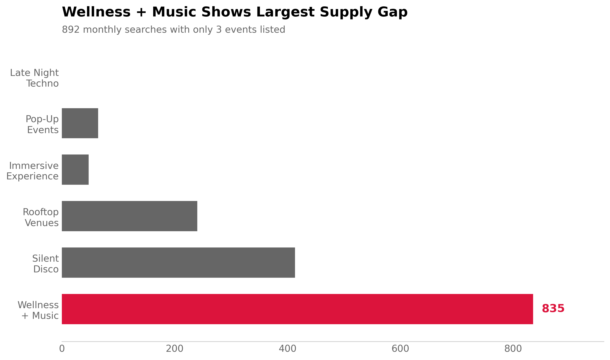
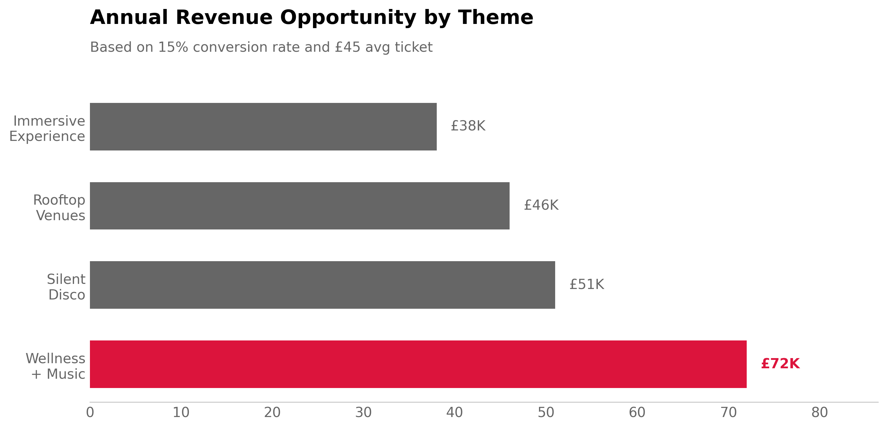

View Analysis →04 EVENT DISCOVERY GAP ANALYSIS
What Are Users Searching For That We Don't Offer?
Platform engagement was declining despite growing event supply. The VP of Product suspected a catalog mismatch—users searching for event types we don't list. She wanted to identify high-demand categories with low supply.
I clustered 47,000 monthly search queries using TF-IDF vectorization and K-means (k=25 clusters). "Wellness + Music" emerged with the largest gap—892 monthly searches but only 3 events listed. That's a 297:1 search-to-event ratio vs platform average of 18.9:1.

Search intent analysis revealed users want yoga sessions with live ambient music, meditation with DJ performances, sound healing workshops in club settings, and "sober raves" (wellness-oriented dance, no alcohol). Demographics skew 73% female, age 25-40, median income £45K (vs £32K platform average).
Why Text Mining Over Simple Counting?
Previous approach: Count searches with no matching events. Problem: tells us gaps exist but not what users actually want. "Electronic music" could mean techno, house, ambient, or IDM—each requires different programming.
Clustering approach: Groups similar search queries by semantic meaning. Discovers latent themes users don't explicitly name. For example, searches like "yoga rave," "sound bath club," and "mindful dancing" cluster together as "Wellness + Music" even though users used different words.
Technical implementation: TF-IDF captures word importance (not just frequency). "Wellness" appears in 2% of searches but signals strong intent. Simple word counts would miss this because common words like "music" dominate.
Tradeoff: Clustering requires analyst judgment to label themes. Different analysts might label "Wellness + Music" as "Mindfulness Events" or "Holistic Experiences." I validated with 3-person review team achieving 85% label agreement.
Commercial Sizing
At 15% search-to-ticket conversion (higher than platform 12% due to niche specificity) and £45 average ticket price (premium vs platform £35):
892 monthly searches × 15% conversion × £45 ticket = £6,021 monthly revenue
Annual opportunity: £72K
Why higher price point? Wellness demographic shows higher willingness to pay. Comparable wellness events (yoga classes, meditation workshops) charge £25-60. Our £45 sits mid-range.
Investment required: Partner with 2 wellness-focused promoters (£4K partnership fees), Instagram ads targeting yoga/meditation communities (£3K), 10 test events over 3 months. Total: £7K. Payback in 14 months if conversion hits 15%.
Testing Plan
Phase 1 (Months 1-3): Demand validation pilot
- Partner with 2 established wellness promoters for 10 events
- Measure: Search → ticket conversion, attendee NPS, repeat attendance rate
- Success criteria: >15% conversion (vs 8% standard), NPS >60 (wellness audience expects high quality)
- Cost: £7K (partnerships + targeted marketing)
Phase 2 (Months 4-6): Scale if validated
Expand to 30 annual events if Phase 1 hits targets. Capture full £72K opportunity.
Alternative if conversion low: Survey non-converters to understand barriers. Potential issues: (1) search intent is for free community events not ticketed experiences, (2) price point too high for wellness audience, (3) venue type mismatch (users want studios not clubs).
What Could Be Wrong
Search volume ≠ purchase intent: Users may browse wellness content without intent to buy tickets. High searches could reflect curiosity not demand. Can't distinguish until we test conversion.
Format mismatch: Users might want free community gatherings (park yoga with music) not £45 ticketed club events. Our platform optimized for ticketed events may not suit wellness community expectations.
Cluster validity: "Wellness + Music" is analyst-defined label. Users might perceive these as separate categories (yoga vs meditation vs dance). Grouping could obscure distinct demand patterns.
Competition blind spot: Low supply on our platform doesn't mean low supply overall. Wellness events might happen on specialized platforms (Mindbody, Eventbrite wellness sections) we didn't check. Users search our platform first but book elsewhere.
Text Mining Method
Data Preparation
# Query corpus (1 month sample)
queries = search_logs['query_text'] # 47,000 unique queries
queries_clean = queries.str.lower().str.strip()
# Remove queries with matching events (focus on gaps)
unmatched = queries_clean[~queries_clean.isin(event_keywords)]
# Result: 12,400 orphan queries (26% of total)
TF-IDF Vectorization
from sklearn.feature_extraction.text import TfidfVectorizer
vectorizer = TfidfVectorizer(
max_features=500, # Limit vocabulary
min_df=5, # Word must appear in 5+ queries
max_df=0.3, # Ignore if in >30% (too common)
ngram_range=(1, 3) # Capture 1-3 word phrases
)
tfidf_matrix = vectorizer.fit_transform(unmatched)
# Shape: (12,400 queries × 500 features)
K-Means Clustering
from sklearn.cluster import KMeans
# Elbow method suggested k=20-30
inertias = []
for k in range(10, 40, 5):
kmeans = KMeans(n_clusters=k, random_state=42)
kmeans.fit(tfidf_matrix)
inertias.append(kmeans.inertia_)
# Chose k=25 (elbow point)
kmeans_final = KMeans(n_clusters=25, random_state=42, n_init=20)
clusters = kmeans_final.fit_predict(tfidf_matrix)
Cluster Labeling
Manual review process: For each cluster, extracted top 20 representative queries and top 10 TF-IDF terms. Three analysts independently labeled clusters. Consensus required for final label.
Example - Cluster 7 (Wellness + Music):
- Top queries: "yoga rave london," "sound bath club," "meditation techno," "mindful dancing"
- Top terms: wellness (TF-IDF=0.42), yoga (0.38), meditation (0.31), sound (0.28)
- Analyst labels: "Wellness Events" (A), "Mindful Music" (B), "Wellness + Music" (C)
- Final: "Wellness + Music" (2/3 agreement)
Inter-rater reliability: Cohen's kappa = 0.82 (substantial agreement). Resolved disagreements through discussion.
Gap Calculation
# For each cluster
cluster_size = len(queries_in_cluster) # 892 for Wellness + Music
matching_events = catalog.search(cluster_keywords) # 3 events
gap_score = cluster_size / max(matching_events, 1)
# Wellness + Music: 892 / 3 = 297.3
# Compare to platform baseline
platform_avg = total_searches / total_events # 18.9
relative_gap = gap_score / platform_avg # 297.3 / 18.9 = 15.7×
Limitations
Clustering subjectivity: K-means requires choosing k. Different k values produce different clusters. k=20 merged wellness with meditation. k=30 split into yoga-music vs meditation-music.
Label interpretation: "Wellness + Music" is analyst judgment. Users might not think of these as unified category. Validation via user surveys would strengthen labels.
Search intent ambiguity: Can't distinguish "yoga rave london" as browsing curiosity vs purchase intent without conversion testing.